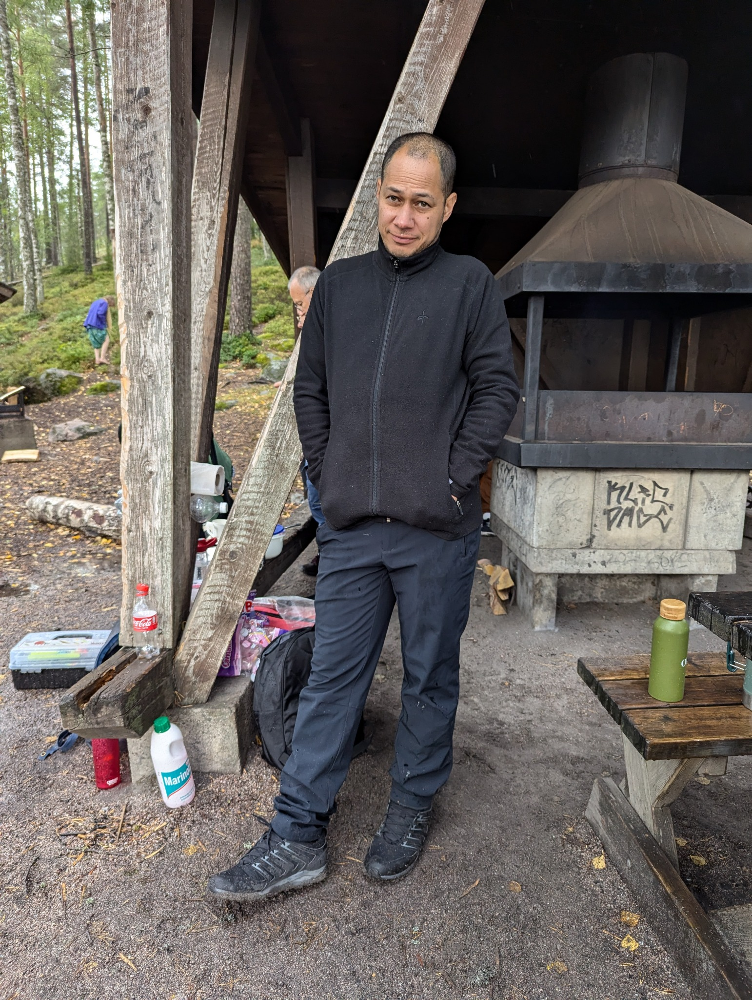

Chapter one
I work in IT, I'm pulled toward cybersecurity and cloud, and I spend my off-hours reading about rockets or rearranging a mise en place.

I'm an IT-focused professional whose curiosity refuses to stay inside a single ticket queue. Most of my days are spent close to networks, endpoints and the sort of small, careful problem-solving that keeps organisations actually able to work.
The rest of my hours go into the slower, deeper end of the field — cybersecurity, cloud architecture, and the systems that connect them.
I came into this work the long way around: a lot of self-teaching, a lot of breaking things in lab environments, and a healthy respect for people who write good documentation. I still believe the most valuable skill in IT is reading carefully before clicking quickly.
The day-to-day looks like a mix of operations and design — supporting users, hardening systems, automating the parts that beg to be automated, and learning a new corner of Microsoft Azure each week. I prefer fixes that hold up at 3 a.m. over fixes that win demos.
Triage, root-cause analysis, end-to-end resolution.
Identity, basic infra, networking primitives.
Workflow design, incident hygiene, clean handoffs.
OSI layers, fiber optics, switches, the hard stuff at the edges.
Threat models, hardening, the human side of security.
Writing the runbook the next person will actually use.
The next chapter is squarely in cybersecurity and cloud infrastructure — two fields that keep getting more interesting the deeper you go. I want to spend the next year getting comfortable with identity, network defence, and the practical realities of running secure systems at scale.
Say Hello